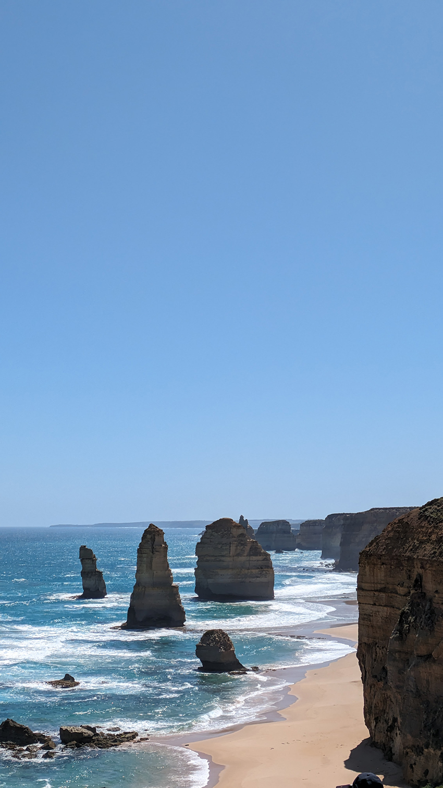
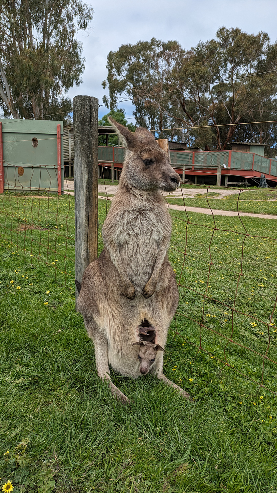
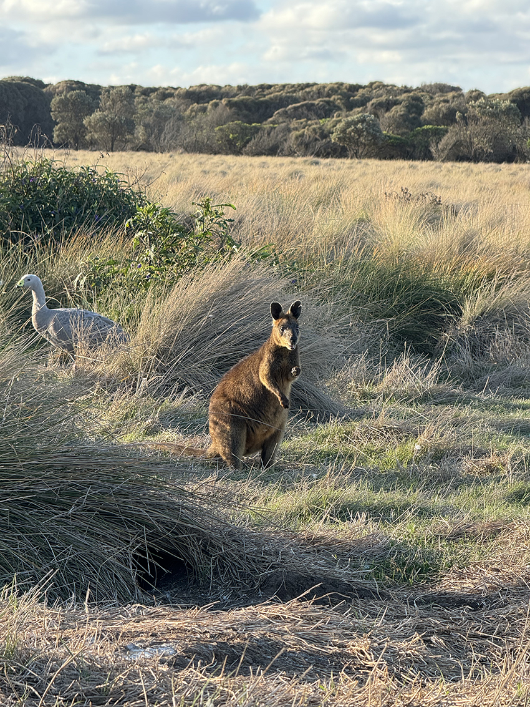
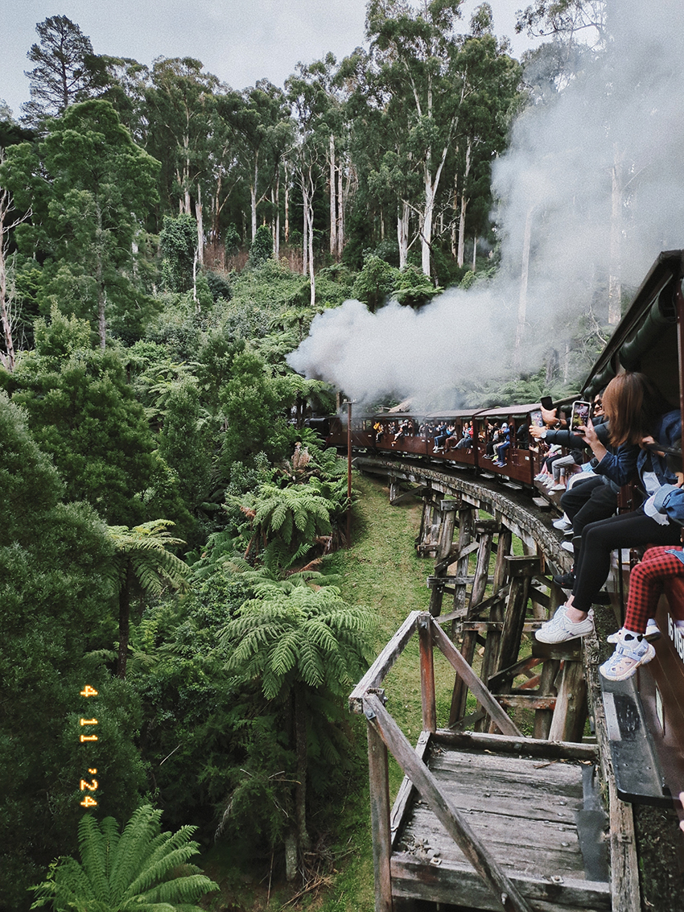
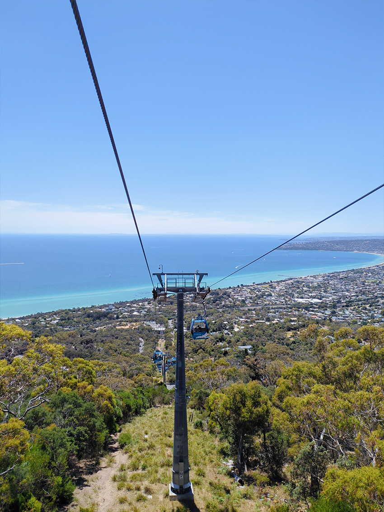
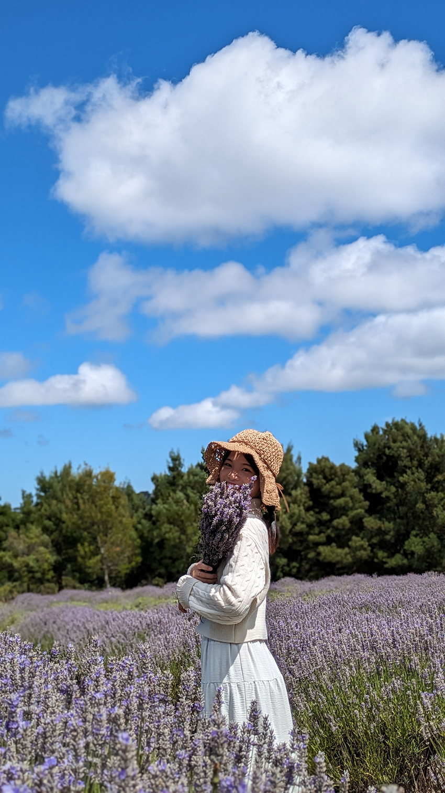
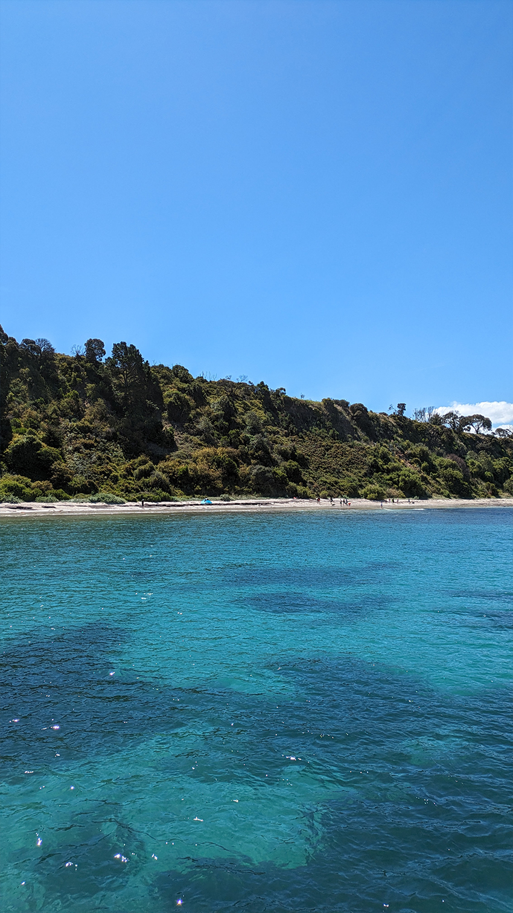
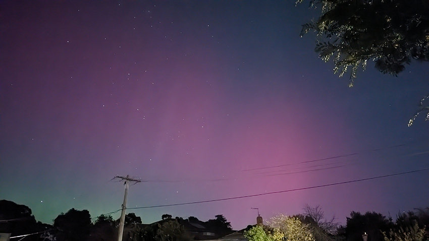

2023-2024年間鼓起勇氣前往墨爾本旅居一年，認識了好多朋友以及在國外LONGSTAY獨有的體驗，分享幾個難忘的景點和趣事。
澳洲最為人所知的是廣大且豐富的生態資源，但比起臺灣便利的交通系統，澳洲不管要去哪裡都真的是遠～～～到爆！只能說如果沒有車，根本哪裡都去不了。因此推薦大家來澳洲比較長途的行程，可以租車自駕遊，或者是跟一日團搭遊覽車的旅行方式，現在已經有很多中文解說的服務，整體體驗下來會輕鬆和有趣許多唷！
|  |
【大洋路 Great Ocean Road】
大洋路是來墨爾本必去的景點之一，我試過自駕遊和包團一日遊，自己更推薦包團一日遊。從墨爾本市區到景點，GOOGLE MAP看似短短的路程，實際上單程就要200多公里，上車睡覺下車拍照的旅遊方式，不用擔心疲勞駕駛，是個不錯的選擇。若要用台灣的景點來比喻，我覺得大洋路很像台灣的蘇花公路，只是在視覺及體感上，放大了至少2倍的感受。
其中大洋路最著名的景點「十二門徒」，據說走下沙灘漫步在大海與岩石旁，那股壯觀的壓迫感，會由衷地讓人對大自然敬畏，並感到自己的渺小。
《阿姆阿姆推薦》Apollo Bay Bakery 地址：125 Great Ocean Rd, Apollo Bay VIC 3233 Australia
來大洋路通常會停在阿波羅灣Apollo Bay吃午餐，推薦綠色招牌的Apollo Bay Bakery的Scallop pies！扇貝派奶香味很重，配上滿滿的餡料，雖然總是燙口，但卻讓人念念不忘！
【企鵝島Phillip Island】
印象中在台灣比較常見的就是胖嘟嘟的國王企鵝，而墨爾本南方有著世界上最小的藍色企鵝，身高大約30公分而已唷！想一睹小企鵝的大家都必須要在冷冷的海邊坐上1個小時，等待夕陽下山後，企鵝們從海裡游回來，搖搖晃晃的陸續上岸，邊玩邊回到各自的洞穴裡，牠們走路的時候就像一隻扭來扭去的雞腿，所以我跟朋友都叫牠雞腿企鵝。
觀賞的過程中是禁止拍照及錄影的，且必須保持安靜，因為擔心聲音及閃光燈會害牠們受到驚嚇。能看到野生的企鵝生活無論在哪都不容易，所以我覺得很值得體驗一次，看見牠們小小的身軀，在木棧步道旁邊回家的身影，身心靈都被療癒了呢！p.s.墨爾本的溫差很大，即便是夏天的海邊，太陽下山後還是很冷！記得帶好保暖衣物！企鵝島周邊也有幾個不錯的景點，可以安排在下午時去走跳。
景點推薦 1. 動物園 Maru Koala and Animal Park
地址：1650 Bass Hwy, Grantville VIC 3984 Australia
這邊的袋鼠很親人，而且很慵懶！ 牠們會直接躺在草地上，等人餵食～ 有機會可以看到袋鼠媽媽和寶寶唷！
|  |
景點推薦 2. 海邊風景區 George Bass Coastal Walk
地址：George Bass Coastal Walk, San Remo VIC 3925 Australia
這裡的景色非常壯觀，高峭的山壁依傍著海，隨著海浪用力地拍打浪花，如果是傍晚過來的話，會看到落日餘暉和這片美景，來這裡的沿途也有機會在旁邊的草叢裡看到野生的小袋鼠(wallaby)唷！
|  |
景點推薦 3.《阿姆阿姆推薦》 義大利餐廳 Isola Di Capri
地址：2 Thompson Ave, Cowes VIC 3922 Australia
看企鵝之前推薦來這間餐廳吃飯，平價又有情調的海景餐廳，口味也很適合台灣人，pizza和義大利麵都推推，記得要訂位唷！
|  |
【普芬比利蒸氣小火車 Puffing Billy Railway】
雖然世界上小火車觀光景點到處都有，但這裡的工作人員都非常敬業很有帶入感！站務人員及列車長都非常和藹可親，搭過兩次的經驗都很好，也可以大方地跟他們拍照。
夏天的時候陽光明媚和冬天的雲霧繚繞不同風景，冬天的更有神秘的氣息，因為煤氣產生的煙霧會隨著火車的方向飄散，網路上很多人說像是前往霍格華茲的列車啦！最特別的是可以把雙腳跨到窗外，拍出儀式感和滿滿的愜意～
【Mornington半島】
位在墨爾本城市的南端，擁有金黃色的海灘和豐富的葡萄產地，在這邊可以看到沿路的葡萄酒莊和葡萄樹！天氣好的時候，絕美的海景隨時可以停下腳步欣賞，建議自駕遊這個美麗的半島，推薦幾個去過不錯的景點！
景點推薦 1. 空中纜車 Arthurs Seat Eagle
地址：1085 Arthurs Seat Rd, Arthurs Seat VIC 3936 Australia
必備的觀光景點！俯瞰mornington超美的海景，天氣好的時候簡直美呆了！
|  |
景點推薦 2. 薰衣草花園 Red Hill Lavender Cafe & Lavender Farm
地址：284 Main Creek Rd, Main Ridge VIC 3928 Australia
薰衣草的季節大約是一月，若這個時間來到墨爾本不妨來這邊走走，空氣中瀰漫的薰衣草香氣絕對會把人迷倒！整片薰衣草田實在是太美了！
|  |
景點推薦 3. 草莓園 Rocky Creek Strawberry Farm
地址：244 Shands Rd, Main Ridge VIC 3928 Australia
這裡有販售新鮮草莓和草莓相關的鬆餅、司康和冰淇淋等飲料下午茶，季節也是一、二月左右，大推司康！！！非常好吃的草莓醬配上奶油，順口好吃停不下來！
|  |
景點推薦 4. 國家公園 Point Nepean National Park
地址：Ochiltree Rd, Portsea VIC 3944 Australia
位於最南端的國家公園擁有豐富的自然景觀，安排漫步健走是不錯的選擇！海的顏色都是動畫才會出現的藍，分為深藍、淺藍和碧綠，清澈見底的海水，簡直美不勝收！
|  |
【墨爾本極光】
來澳洲最令我意想不到的是，我超級無敵爆炸幸運地遇到極光大爆發的一年，能在墨爾本的家門口看到極光真的三生有幸！通常預想自己人生第一場初雪會在日本，第一場極光或許是在冰島！但人生有趣的地方是，你永遠不知道機會和幸運什麼時候來臨！
當天晚上在澳洲認識的朋友們陸續貼出看到極光的消息，但我並不認為自己這區域也會有，直到聽到附近的鄰居開始躁動，才趕快跟室友約出門「讓我們去追極光吧」！這一切有多幸運呢？就連是澳洲人的室友都不曾見過極光，我們就這麼突然臨時起意地驅車前往海邊，也不確定是否能看見。在追尋極光的一路上，公路黑暗且寂靜（澳洲的夜晚離開市區後就非常安靜，只有袋鼠和更多的袋鼠），我跟室友聊了很多，這也讓我們的關係又拉近一些，在這些悸動和緊張期待的情緒堆疊下，我們來到空曠的海邊。
這時候非常適合放一首張韶涵的《歐若拉 Aurora》（我有一個老靈魂）。原本一片漆黑的夜空，伴隨著「哇！！！」我們一聲驚嘆！黑色的天空中隱約有紅色和黃綠色的極光從黑暗中滲出，一開始肉眼其實很難看得清楚，但若有似無的光線在一片黑暗上色，就足以讓人類瘋狂！手機長曝光之後的照片才是讓我們真正驚嘆的地方，原來我們正沐浴在這麼美的極光下。
因為天氣很冷，我和室友姐姐抱在一起取暖，享受這個神聖的時刻，當時內心盈滿的感覺到現在還忘不了～我覺得光是這些文字都不足以表達當下的感動（泛淚）。也感嘆著我就來這麼一年，竟然有機會見到極光，並且和我的澳洲室友一起見證，是來澳洲前完全沒有想過的場景啊！
回程的時候，我們回到家門口，是當晚第三波極光大爆發！我們看到家門口黑漆漆的天空有明顯的光線，竟然還看到粉色、綠色和白色，再次拿起手機長曝光！又是一陣大驚呼！我們簡直太幸運！見到超多顏色的極光～那是一個神秘又美好的夜晚，也是我這趟行程最值回票價的經驗！
題外話，看到極光的當天，剛好有在冰島旅行的友人，但因為長日照和天氣不好，反而沒有看到極光呢！這一切是多麼地不可思議！